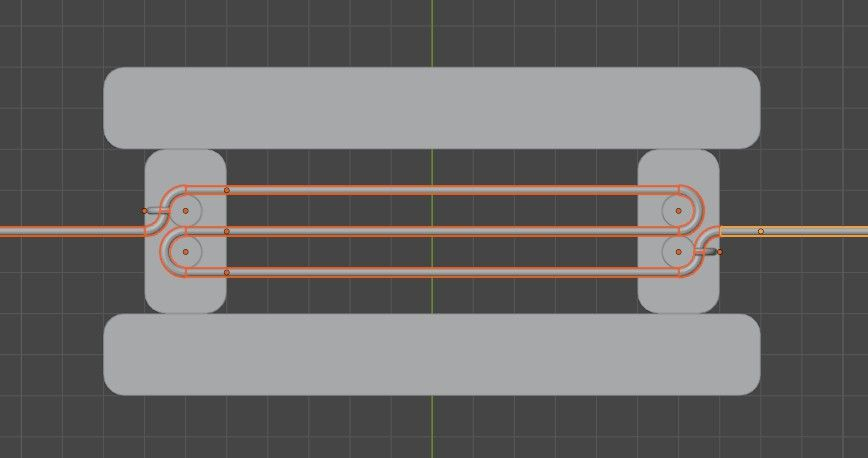
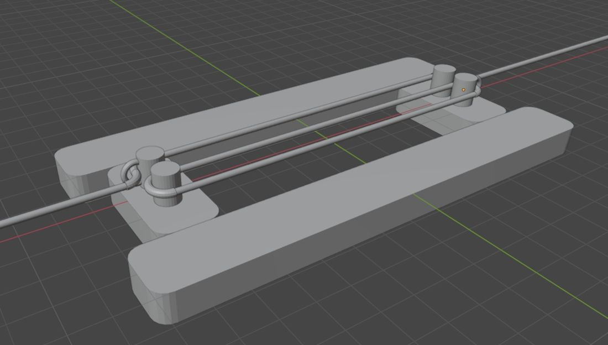
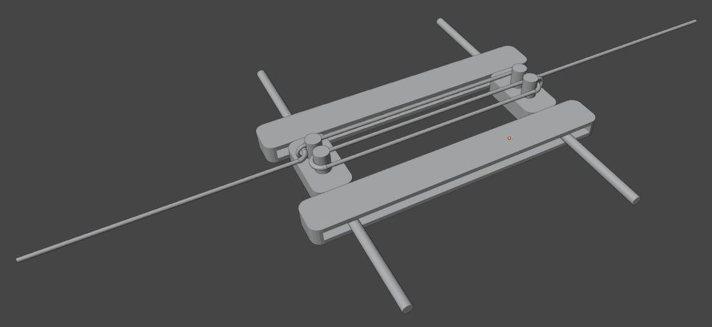
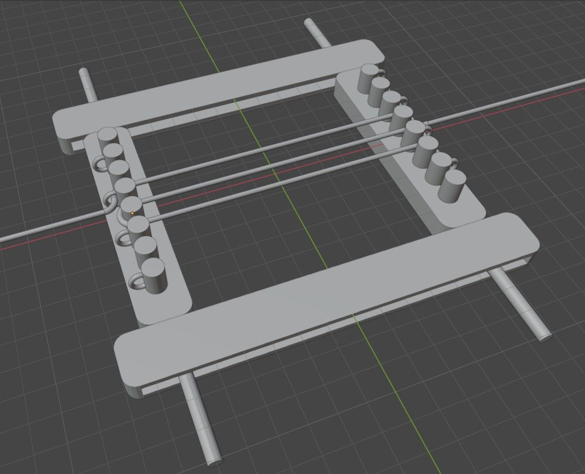
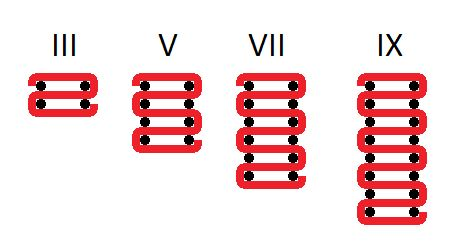
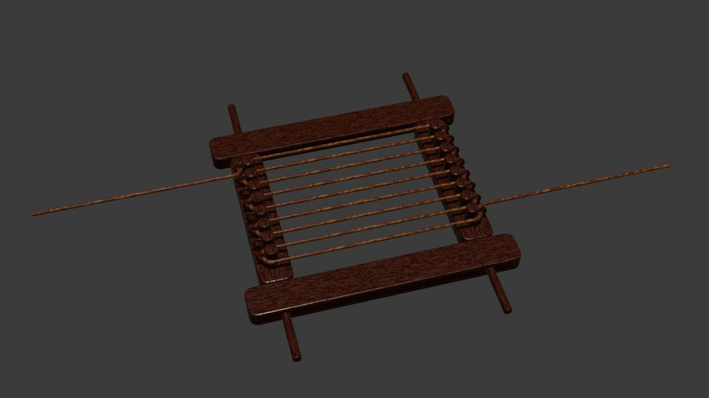

Rope Around The Clock
- Construct the angle you wish to trisect, which should include points O, A and B.
- Lay a circular template of any size over point O.
- Measure a piece of rope around the arc of the template from point A to point B.
- Cut or mark the rope at point A and point B
- Put the rope into the jig I have designed and is shown in the following diagram.

- Secure the start of the rope at point A weaving it around point B then point C and finally securing the end at point D as shown by the purple line in the diagram.
- Pull the two parts of the jig apart from one another to split the rope into exact thirds.
- Cut or mark the rope at points Z1 and Z2 as shown in the diagram.
- Return the rope to the arc of the template circle from point A to point B.
- Use the marked or cut sections of the rope to define new points to connect to point O.
This achieves a mathematically perfect trisection of the original angle, since each third of the rope corresponds exactly to one-third of the arc from A to B, while a circular template might fall outside of the standard rule set proposed for this ancient challenge, I am sure we all understand how it is trivial to construct a circle using a compass, straightedge and simple cutting tools.
Ancient Architects, Engineers and Mathematicians would have almost certainly had access to a simple circle template, likely in a range of sizes, though for this method, any size is appropriate.
As such I feel it perfectly adheres to the rule set, though if necessary anyone could add another set of steps which perfectly describe how to create the template piece that is required, as well as the simple wooden jig I have proposed for mechanically separating the rope into thirds.
I spent a few years researching approximations for the three classic geometry problems, it is only once I stopped that a year or so later I happened upon this video by Stand-Up Maths: https://www.youtube.com/watch?v=NinrTW1Bx2Y
From the moment I saw it I felt the need to comment “Alternatively you could just split the rope into exact thirds and not bother counting halves with a very simple trick where you pull both halves from two sets of points, the end points and two midway points until all six newly created points on the rope line up.” then I designed the jig and realised its potential for trisecting angles.

The jig itself acts as a form of geometric proof where the line or rope is pulled taut from two ends and each line goes through exactly two quarter circle turns around the pegs.
Making each line the distance between the pegs plus one half circle turn, or exactly a third of the length from point Z0 to Z3 where the rope must secured or tied so that it doesn't slip through the loop that holds it in place.

This is a theoretically perfect construction of my proposed jig for dividing any given length of rope into exact thirds.
This method is also infinitely scalable, it would produce perfect results ranging anywhere up to 900 atoms all the way to 3 universes in width and greater.
Having looked into it, the first mention of the problem of trisecting angles is in Euclid’s Elements (circa 300 BCE):
This is considered the canonical reference for straightedge-and-compass constructions.
It defines the allowed operations and constructions, but it’s largely axiomatic and idealized—it doesn’t mention limitations of physical tools.
"Other Greek mathematicians (Archimedes, Apollonius) also explored mechanical methods, like the “mesolabe” for angle trisection or curves like the quadratrix, but these often fell outside Euclid’s strict toolset."
Which to me essentially explains that mechanical solutions are allowed, while it is clear the more modern interpretation of the rules is entirely constrained by algebra and field theory, defining numbers that can be obtained from rationals using a finite sequence of operations involving square roots.
So I definitely feel that even though it uses a tool not in the rule set, it is a tool so simple it could be constructed from clay using rocks and rope, so it is without a doubt acceptable, to me at least.
Page 3Interestingly the descriptions I could find of the Mesolabium feel eerily similar to my design, with three rectangular shapes and four pins, which could be presented diagonally to the same effect, it is perhaps plausible that, this almost mythical device was conceptually similar.
Though if it did exist, it was likely more complicated, even if it operated according to the same principles as the design I have detailed here, descriptions even describe that it uses mean proportions to arrive at its result, which is exactly what this device does.
I also wonder if perhaps the language of the time obscured the ability to properly describe it and that over the years, translations of it could be misinterpreted entirely, as my design does use two mean proportions, but they are each proportions of a half, of two thirds.
The Mesolabium
Is this a rediscovery of the Mesolabium or mean-taker device?
It certainly seems as though the principle I have discovered or perhaps rediscovered almost perfectly matches descriptions of how the device worked.
“an ancient instrument for finding two mean proportionals between two given lines, required in solving the problem of the duplication of the cube.” - https://en.wiktionary.org/wiki/mesolabe
I would describe mine as an instrument for finding two points halfway between two thirds of any given length of rope.
But the same principle could easily be described in countless ways that vary in their accuracy immensely, including something that finds two mean proportionals between the two ends of a given length of rope.
I find it intriguing to say the least how the original descriptions of the device almost perfectly mirror the way this works, short of how it is interpreted.

Here is a slightly more refined design for the device which might mirror the ancient descriptions of the Mesolabium.
Page 4Mechanical Angle Trisection Using a Rope-and-Peg Jig
A precise step by step to mechanical angle trisection using a rope and peg jig.
- Setup:
- Let ∠OAB be the angle to trisect.
- Place a circular template centred at the vertex O. The template serves only as a guide for measuring the arc of the angle; it does not represent the angle itself.
- Arc Measurement:
- Using a flexible rope, measure the arc from A to B along the edge of the circular template.
- Mark the length of the arc on the rope with charcoal.
- Weaving the Rope on the Jig:
- Secure the rope at the first peg of the jig using the start mark.
- Weave the rope in an alternating pattern: right and around the second peg, left and around the third peg, and finally secure the rope at the fourth peg with the end mark.
- Dividing the Rope:
- Pull the two pegboards apart sideways. This action evenly distributes the rope along the pegs, automatically dividing the rope into three equal lengths.
- Mark the division points at the second and third pegs with charcoal.
- Transferring the Division Back to the Angle:
- Remove the rope from the jig and lay it back along the circular template to match the original arc.
- Transfer the division marks onto the arc.
- Completing the Trisection:
- Draw rays from the vertex O through the two marked points on the arc.
- These rays perfectly trisect ∠OAB.
Notes
- The method works for any arbitrary angle.
- The rope can be of any practical length, provided it is shorter than three times the length of the jig.
- The circular template can be of any size.
- The jig effectively encodes a proportional division of the arc, and the mechanical action of stretching the rope ensures exact trisection.
- This construction falls outside classical Euclidean rules because it uses auxiliary tools (rope, pegs, jig, and circular template), but it provides a precise and reproducible trisection for any angle.
Odd Divisions
Below is an example of a version of the device which would support trisection, quintisection, septisection and nonasection for lengths of rope.

This would be extendable to allow for division of any length into odd factors.

Above is a simple diagram showing how to use it, I imagine this diagram would be inscribed on either or both of the rails.
Technically, operating this device as it is currently designed would require two people in order to ensure that the rope is kept taut and one to be the mean-taker.
Page 6Here is a render of the device with colour.

The users would hold the rope in their right hand so that the end points are kept tight at the key points, from there both users would push each end apart in order to divide the rope into as many lengths as chosen.
This could definitely be streamlined so that it doesn't require two or possibly even three users, but this is just how I made the first set of drafts, two users would effectively ensure that it is as accurate as can be, while a third user would mark the rope at the mean proportionals encoded along the rope at the pegs sides.
It could however also be scaled up such that it requires more operators, I could imagine one large enough to require a minimum of seven people for it to work, where one pulls the rope tight from each of the four handles, one to hold the start of the rope in place, one for the end of the rope and finally the mean-taker to mark the rope.
On the following page are some detailed descriptions of potential use cases for a large version of this device.
Page 7Potential Use Cases
1. Architectural Layouts
- Large temples, theaters, and stadia often used geometric ratios (3:5, 5:7, 7:9) in design.
- A scaled-up version of your device could help set out these proportions in rope on the ground before stonework.
- Instead of a single builder “measuring,” you’d have teams pulling taut ropes across foundation lines, with one marking points. This makes your 7-operator scenario quite believable.
2. Surveying and Land Division
- Rope-stretchers in ancient Egypt literally defined property and fields using ropes and pegs.
- A device like yours could enforce proportional spacing without arithmetic or written tables.
- Farmers or surveyors could use it to divide irrigation channels, fields, or boundary lengths into equal odd sections — something awkward to do with just knots.
3. Astronomical / Ritual Use
- Devices for dividing circles or arcs were important in astronomy (marking shadow paths, sundials, calendar circles).
- Your jig could allow precise division of circular templates used in sky-mapping or ritual objects.
- If scaled up, you could even imagine it being part of ceremonial space design — e.g., dividing a circular plaza into ritual stations.
4. Craft & Construction
- Shipbuilding: dividing beams, hull sections, or sails into proportional parts.
- Carpentry: laying out repeating intervals in timber without needing measuring rods.
- Textile work: a tool like this could help divide warp threads or ropes into odd numbers of equal bundles.
5. Teaching & Demonstration
- In a philosophical or educational context, it could have been used as a tangible demonstration of proportions, means, or the impossibility of certain constructions with just compass and straightedge.
- A “large, multi-operator” version could even serve as a didactic spectacle — students literally embodying a mathematical process together.